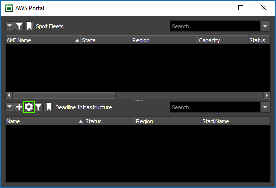
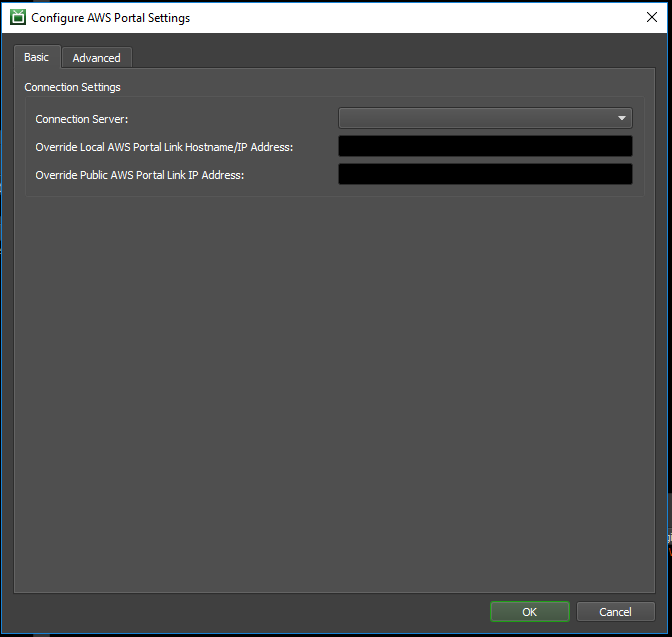
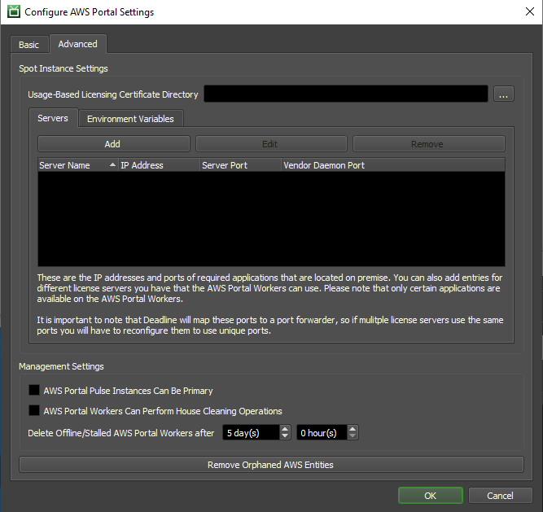
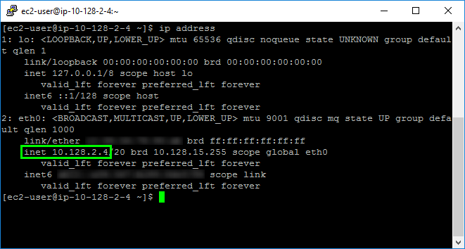

Note
While AWS Portal can enable cloud rendering in Deadline 10, AWS Deadline Cloud is a newer offering that has been built specifically for the cloud. It is a fully managed service that does not require installation or maintenance of infrastructure (e.g., repository, database, or license server). Worker fleet auto-scaling, asset synching, and licensing are all managed natively within AWS by Deadline Cloud. See here for more information on Deadline Cloud and its capabilities.
AWS Portal Configuration Reference¶
This section contains a reference for all of the configuration options for the AWS Portal.
Configure AWS Portal Settings dialog¶
The Configure AWS Portal Settings dialog allows you to control settings related to the AWS Portal.
To access this dialog:
Open the Deadline Monitor.
Enter Power User mode (‘Tools’ menu → ‘Power User Mode’).
Open the AWS Portal panel (‘View’ menu → ‘New Panel’ → ‘AWS Portal’).
The first time you open the AWS Portal panel, it will show an AWS Login screen, which prompts you for your AWS Access Key and Secret Access Key.

Enter the keys that you saved during the AWSPortal IAM User Setup steps that you followed earlier(In the background, this will also also trigger Asset Transfer S3 bucket creation, if one doesn’t already exist in your account).
The login controls also include a drop-down box to select your default AWS Region. Note that you can choose any supported region when starting your infrastructure, regardless of your selection here. For more information on AWS regions, please see AWS Global Infrastructure.
After you have entered your credentials, press the ‘Login’ button.
Important Note: The credentials entered into this login dialog are persisted between installations. If you are not prompted to enter credentials after reinstalling AWS Portal, logout and log back in to ensure you are signed in with the intended IAM user.

Note
To illustrate the issue that can arise from not logging out and back in upon reinstallation, imagine the following scenario:
You install AWS Portal, and during the installation enter the credentials of IAM user A.
You then open the AWS Portal panel for the first time, and are prompted for credentials. You enter the credentials of IAM user A, and select the “Remember credentials on this machine” checkbox.
You uninstall AWS Portal.
You reinstall AWS Portal, and during the installation enter the credentials of IAM user B.
You open the AWS Portal panel, and are automatically logged in using the saved credentials of IAM user A.
Click the Gear button in the AWS Portal dialog. This button is adjacent to “Deadline Infrastructure”.

Basic tab¶

Connection Server¶
Choose the Remote Connection Server that AWS Portal will use to communicate with your Deadline Repository.
Override Local AWS Portal Link Hostname / IP Address¶
We attempt to automatically detect the local IP address of the machine that is running the AWS Portal Link. If this automatic detection fails, you can override the IP address using this control.
To determine the IP address, follow the instructions in “How to Find Your Local IP Address” on the machine that is running the AWS Portal Portal Link.
Override Public AWS Portal Link IP Address¶
AWS will only allow incoming requests from a specific public IP address. Deadline will try to get your public IP automatically from checkip.amazonaws.com, however, that IP may not be correct. Here you can override that IP address.
You should normally leave this empty. If your IP address has changed, you can update AWS to allow access from your new IP address by doing the following:
Open the Deadline Monitor.
Enter Power User mode (‘Tools’ menu → ‘Power User Mode’).
Open the AWS Portal panel (‘View’ menu → ‘New Panel’ → ‘AWS Portal’).
Right-click on your infrastructure in the AWS Portal dialog.
In the pop-up menu that appears, select “Refresh AWS Portal Services Connection”.
One sign that your public IP address may be set incorrectly is if you have created a Deadline Infrastructure, but you cannot see its License Forwarder in the License Forwarders panel (Deadline Monitor → View menu → New Panel → License Forwarders). If no License Forwarder appears for your Infrastructure stack, or if it has stopped updating (as seen in the “Last Status Update” column), then you may need to change this setting.
Before changing this setting, you should try to use the “Refresh AWS Portal Services Connection” option, described above.
If that doesn’t resolve the problem, then you can get the IP address that you need for this setting by finding My IP while following the instructions in Wrong Public IP Address on Gateway Security Group.
Advanced tab¶

Usage-Based Licensing Certificate Directory¶
Specify a directory that contains pfx certificate files for Usage-Based Licensing.
These certificate files will be automatically copied to new Deadline Infrastructures. To update the certificates on an existing infrastructure, open the AWS Portal panel in the Deadline Monitor, right-click on the infrastructure, and choose “Upload Certificates”.
Please see here for more information on Usage-Based Licensing.
Servers¶
This enables you to specify ports that will be forwarded from the gateway instance in your AWS infrastructure to a server on your local network.
Note that the gateway instance always has private IP address 10.128.2.4.
This also allows you to use your own on-premesis license server for certain applications. For more information, please see Bring Your Own License Setup.
Environment Variables¶
Here you can specify environment variables that will be set on your Deadline Workers that are running on AWS.
Management Settings¶
AWS Portal Pulse Instances Can Be Primary
Enable this setting to allow the Deadline Pulse running on your AWS Infrastructure to act as the primary pulse.
AWS Portal Workers Can Perform House Cleaning Operations
Enable this setting to allow AWS Portal Deadline Workers to perform house cleaning.
Note
In Deadline 10.0.21 and later, client applications (Pulse, Worker, etc.) that are connected to the Remote Connection Server will not be able to perform house cleaning operations. Instead, the Remote Connection Server has adopted this responsibility and will perform House Cleaning, Repository Repair, and Pending Job Scan periodically.
Client applications that use a direct Repository connection can still perform house cleaning operations as normal.
When running several applications in Direct connection mode it might be necessary to prevent some of them from running house cleaning tasks. This could be done by setting the following environment variables to true:
DCONFIG_DISABLEHOUSECLEANING
DCONFIG_DISABLEREPOSITORYJOBSSCAN
DCONFIG_DISABLEREPOSITORYREPAIR
The same effect could be achieved with configuration file settings: House Cleaning Override Settings.
Remove Orphaned AWS Entities¶
This is meant for use if you change to use a different AWS account. This will remove any spot fleets, infrastructures, and S3 buckets not owned by the account you are currently signed in from the Deadline database. It will not stop or delete these entities in AWS itself. If any spot fleets, infrastructures, or S3 buckets are not deleted from the old AWS account charges will apply.
Asset Server Settings dialog¶
The Asset Server Settings dialog allows you to control settings related to the AWS Portal Asset Server.
To access the dialog:
Open the Deadline Monitor.
Enter Power User mode (“Tools” menu > “Power User Mode”).
Choose the “Tools” menu → “Configure Asset Server…”

Asset Server Local IP Address¶
This must be set to the private IP address of the machine that is running the AWS Portal Asset Server. You should use an IP address that is accessible to all of your machines that are running the Deadline Client. This machine should be behind your firewall so that it is not accessible to the public Internet. This machine must have access to the “Root Directories” specified below.
To determine the IP address, follow the instructions in “How to Find Your Local IP Address” on the machine that is running the AWS Portal Asset Server.
If you will only submit Deadline jobs from the same machine that is running the AWS Portal Asset Server, then you can use the IP address 127.0.0.1.
Asset Server Port¶
Should be left as the default 4000.
S3 Bucket¶
This is the S3 bucket that your assets will be transferred to for AWS Portal.
Create New Bucket
When you login to AWS Portal the first time within the Deadline Monitor, a default bucket will automatically be created in your account. You can also create a new bucket using the “Create New Bucket” button.
Warning
The AWS Portal will not allow you to create/change the S3 bucket if there are running infrastructures. You should stop your infrastructure before performing this step.
Clear Bucket
This will empty the bucket by deleting all its content. Please note that once deleted, the contents of the bucket cannot be restored.
Root Directories¶
A list of filesystem directories that you want to share with the Deadline Workers running on AWS.
This is a list of directories that the Asset Server can access files in. This includes sub-directories, and their sub-directories, and so on, so it is only necessary to specify the root directories of the directory structures where you store your assets.
For instance, if you have a file server accessible from the UNC path
\\fs-01\assets\, but you have assets located in \\fs-01\assets\textures\ and \\fs-01\assets\particles\,
you would only need to register \\fs-01\assets\ as a file transfer directory.
In the case that you store your assets in multiple locations, for instance, two different file servers,
you can specify more than one directory. For example, if you have assets divided between two file servers
\\fs-team-a\assets\, and \\fs-team-b\assets\, you would need to specify both as file transfer directories.
The paths set for each file transfer directory should be paths that are accessible from the machine you
are running Asset Server on, not necessarily the machine you’re configuring the File Transfer Directories from.
For instance, if your asset server is installed on a machine running Linux with your file server mounted as /mnt/assets/
and you’re configuring the Asset Server from a Windows machine with the file server mounted as X:\, you would specify only /mnt/assets/
as a file transfer directory.
Output File Extensions¶
This setting controls which file types will be transferred from your AWS Worker instances back to your on-premesis filesystem.
By default, AWS Portal attempts to detect which output files will be created by your job, and it will transfer them automatically. However, this may fail in some cases. For example, the automatic detection does not work for jobs submitted through the Deadline Monitor. In such cases, you can have AWS Portal transfer your output files back to you by adding their filename extension here.
How to Find Your Local IP Address¶
Several controls in the AWS Portal configuration require a machine’s local IP address. How you find this depends on your computer’s operating system.
Windows¶
Open a Command Prompt window on the machine for which you need the local IP address.
Run the
ipconfigcommand, and look for yourIPv4 Address:
Linux¶
Open a command-line window on the machine for which you need the local IP address.
Run the
ip addresscommand, and look for yourinetaddress:Note
The output of
ip addressmay include the address of multiple devices. Normally you will want the address from your first ethernet adapter, called eth0.You do not want the address from the lo device, 127.0.0.1.